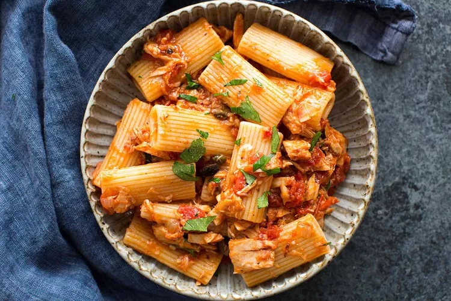

Tuna Pasta

Ingredients
- Kosher salt for the pasta water, plus more to taste
- 12 ounces short pasta (such as shells, macaroni, rigatoni)
- 3 tablespoons extra virgin olive oil (plus 2 tablespoons if you are using tuna packed in water)
- 1/4 cup minced shallot or onion
- 2 teaspoons minced garlic
- 1/2 teaspoon red pepper flakes
- 2 (5-ounce) cans tuna packed in olive oil, drained
- 1 (14-ounce) can crushed tomatoes
- 1/4 cup chopped Kalamata olives
- 1 teaspoon capers
- 1/2 teaspoon black pepper
- 1/4 cup shredded Parmesan cheese
- 1 tablespoon chopped fresh parsley
Steps
- Boil the water:
- Bring 4 quarts of salted water to a boil (add 1 tablespoon salt for every 2 quarts of water). While the water is heating, prep the ingredients and start the sauce. Sauté the shallots, garlic, and red pepper flakes:
- Heat 3 tablespoons of olive oil in a large sauté pan on medium heat. Once the oil is hot, add the chopped shallots, minced garlic, and red pepper flakes at the same time to the pan. Let cook for about 30 seconds. (If you are subbing onions for the shallots, let them cook a few minutes before adding the garlic and red pepper flakes.) sautéing shallots for canned tuna pasta sauce Add the tuna:
- Drain the canned tuna and add it to the pan. If you are using tuna packed in water and not olive oil, add 2 or 3 more tablespoons of olive oil to the pan. canned tuna cooking for tuna pasta with tomatoes and olives
- Break up any chunks of tuna with a fork or wooden spoon. Let simmer for 1 minute. Add the tomatoes, olives, capers, salt, and pepper:
- Stir in the crushed tomatoes, olives, capers, 1/4 teaspoon salt, and pepper. tomatoes, olives and canned tuna sauce for pasta
- Bring to a simmer and reduce heat to the lowest setting to gently cook while you cook the pasta. Cook the pasta:
- Add dry pasta to the pot of boiling salted water. Cook uncovered at a vigorous full boil until al dente — cooked, but still a little firm to the bite, about 13 to 14 minutes. pasta boiling for tuna pasta
- Before draining, remove 1 cup of the pasta water and set aside. Combine the pasta, sauce, Parmesan and parsley:
- Drain the pasta and stir into the sauce. Toss with grated Parmesan and chopped fresh parsley. If the pasta seems a little dry after a few minutes, add back in some of the reserved pasta water.